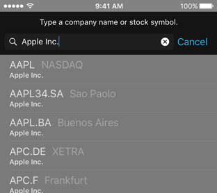
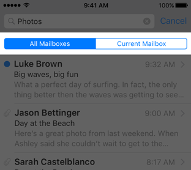

Search Bars 搜索栏


用户通过搜索栏在大量的信息中查找。搜索栏有两种样式：显眼（prominent）（默认）和极简（minimal）。“通讯录”使用了显眼搜索栏，含有引人注目的浅色背景。“照片”使用了极简样式，更好地融入了周边界面。搜索栏默认是半透明的，但也可以被设置成不透明的。有需要时，搜索栏也可以自动遮盖住导航栏。

搜索栏含有一个单独的搜索框，该搜索框可以包含占位文本、清除按钮、书签按钮和结果列表按钮。除了搜索框之外，搜索栏还会含有一个退出当前搜索的取消按钮。


显眼
极简
让用户通过搜索栏而不是文本框去搜索（Use a search bar rather than a text field to implement search.）。文本框不具备用户期待的标准搜索栏所拥有的外观特征。
包含清除和取消按钮（Enable the Clear and Cancel buttons. ）。大部分的搜索栏都含有一个清除按钮用来清空输入栏的内容，以及一个取消按钮来快速退出搜索。
选择合适的搜索栏样式，使其能够反映出搜索功能在你的app中的价值（Pick a search bar style that reflects the importance of search in your app.）。如果在你的app中搜索是个关键功能，使用默认的、显眼搜索栏样式。如果搜索功能使用频率不高，则使用极简样式。
必要时，在搜索栏提供线索和背景（If necessary, provide hints and context in a search bar. ）。搜索框可以包含占位文本来提示可搜索的类型，比如“搜索服装、鞋子和饰品”或只是简单的“搜索”二字。也可以在搜索栏正上方展示一行简明扼要的带有适当标点的文字，用来引导用户。比如股票（Stocks），就在搜索框上方展示了一行文本告知用户他们可以输入公司名称或股票符号。


占位文本
清除按钮
取消按钮


考虑在搜索栏下方提供快捷键之类的内容（Consider providing helpful shortcuts and other content below a search bar. ）。利用搜索栏下方的区域帮助用户更快地获取内容。比如浏览器（Safari），在你点击搜索框的时候会立即显示你的书签，无需输入任何关键词的情况下即可进入选择的对象。股票app在你对搜索栏输入的时候，会一边在下方展示相关的结果列表，你可以在列表中点击选择而不用完整输入字符。
了解开发细节，请参阅 UISearchController 和 UISearchBar.

范围栏 Scope Bars
范围栏可以附加于搜索栏，让用户定义搜索的范围。范围栏采用和搜索栏一样的外观。


专注于优化搜索结果而不是一味添加范围栏（Favor improving search results over including a scope bar. ）。当用户想在定义明确的类别中搜索时，范围栏会有很大的帮助。但是，更好的做法是优化搜索结果，这样用户就无需通过范围栏进行筛选了。
了解开发细节，请参阅UISearchBar。